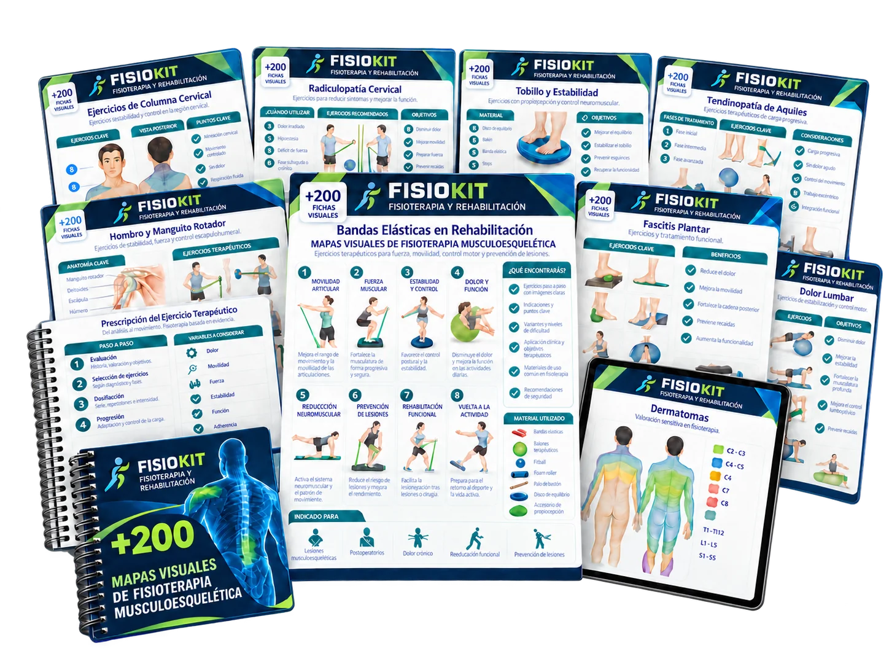

01
Consulta referencias visuales sin perder tiempo buscando información dispersa.
No queremos que el valor de la colección completa sea un problema para que puedas empezar. Por eso puedes acceder a una selección esencial de mapas visuales, pensada para complementar FisioKit con una inversión más ligera.

Esta alternativa reúne mapas prácticos para que puedas consultar temas frecuentes y aplicar lo aprendido sin asumir una compra mayor.
Consulta referencias visuales sin perder tiempo buscando información dispersa.
Refuerza tu evaluación y tu razonamiento clínico con apoyo visual.
Empieza con una selección concreta y amplía cuando realmente lo necesites.
Una selección práctica para complementar FisioKit cuando necesites revisar una región, una prueba o una idea de tratamiento con mayor claridad.
Material visual diseñado para ayudarte a conectar evaluación, razonamiento y ejercicio terapéutico.


Apoyo visual para ordenar preguntas, hallazgos y pruebas relevantes.
Referencias visuales para ubicar estructuras y comprender mejor cada caso.
Material organizado para consultar condiciones musculoesqueléticas habituales.
Ideas visuales para conectar objetivos clínicos con progresión y movimiento.
La colección completa seguirá disponible si más adelante quieres ampliar tu biblioteca. Esta alternativa existe para que puedas comenzar ahora con una inversión más cómoda.
Si ahora no quieres asumir el valor de la colección completa, esta opción te permite comenzar con una selección práctica y más accesible.
Completa tu acceso
Finaliza tu compra de forma segura.
Tu compra inicial sigue siendo válida aunque decidas no añadir esta opción. Solo elige esta alternativa si realmente te resulta más cómoda en este momento.
No. Es una selección más pequeña y accesible para que puedas comenzar sin asumir el valor de la colección completa.
Sí. FisioKit te ayuda a implementar y organizar tu práctica; los mapas aportan apoyo visual para evaluar, razonar y prescribir.
No pasa nada. Tu compra inicial continúa siendo válida. Esta página solo presenta una alternativa adicional.
Sí. Si más adelante quieres acceder a la colección completa, podrás hacerlo cuando sea el momento adecuado para ti.